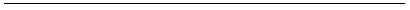
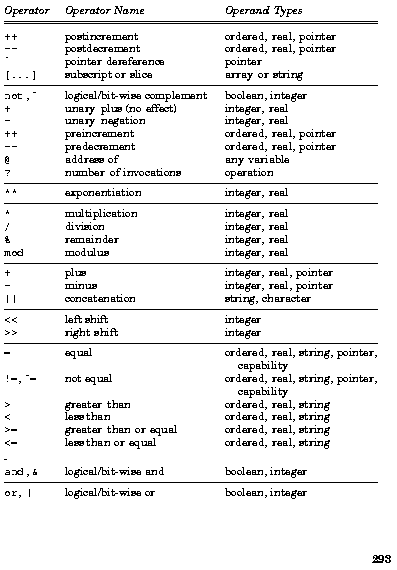
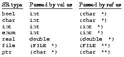
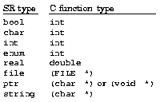

APPENDIX C

|
Operators and Predefined Functions |

SR provides a rich set of operators and predefined functions, both of which are used in expressions. This appendix summarizes the operators and describes the meaning and use of each predefined function.
The table on the following pages lists all of SR's operators. These are listed in groups based on precedence and associativity. The first two groups consist of the unary postfix and prefix operators. The other groups consist of binary operators. The table also indicates allowed operand types for each operator. See Chapter 2 for further details and examples (except for the ? operator, which was introduced in Chapter 11).
The operators within a group have the same precedence. The groups themselves are listed in decreasing order of precedence. Thus postfix oper- ators have the highest precedence, followed by prefix operators, and so on; assignment operators have the lowest precedence.
The operators within a group of binary operators also have the same associativity. Most of the binary operators are left associative, which means that operands are evaluated left to right in an expression involving operators of the same precedence. For example, a*b/c is evaluated as (a*b)/c. The exponentiation and assignment operators are right associative.
Parentheses can, as usual, be placed around an expression to give it the highest precedence. Function invocations have precedence above the postfix operators. The dot ``operator,'' which is used to reference fields of
records and unions and to qualify imported names, has precedence equal to that of the postfix operators.

Appendix C
xor logical/bit-wise exclusive or boolean, integer
|
:= +:= |
assign increment, then assign |
all integer, real, pointer integer, real, pointer integer, real |
Table C.1. Operators in decreasing order of precedence (by groups).
The following functions can be applied to arguments having the types specified. (Strictly speaking, low, high, and new are not functions; their names are keywords and their arguments are type names, not expressions.)
abs(x)
The absolute value of x. Defined for integers and reals.
max(x1, ..., xn)
min(x1, ..., xn)
The maximum or minimum of the list of arguments. Defined for ordered types and reals. All arguments must be of the same type, except that integers and reals can be mixed (in which case the integers are implicitly converted to reals and the result is a real).
pred(x)
succ(x)
The predecessor or successor of x. Defined for ordered types.
low(T)
|
Operators and Predefined Functions high(T) |
295 |
The smallest or largest value of type T. Defined for ordered types and reals; low(real) is the smallest representable real value greater than 0.
Appendix C lb(a,n)
ub(a,n)
The lower or upper bound of range n of array a. Argument n is optional; the default value is 1. If n is present, it must be an integer literal.
length(s)
The number of characters in string s.
maxlength(s)
The maximum number of characters that can be stored in string s.
new(T)
Allocates storage for a new object of type T and returns a pointer to it.
free(p)
Frees the object pointed to by pointer p; the object must have been allocated by new(T).
The following functions take real arguments--or integers by the implicit conversion rule--and they return a real result. For the trigonometric functions, angles are measured in radians; the return ranges are consistent with ANSI C [ANSI 1989]. In most cases SR just calls C library routines directly, so the handling of erroneous arguments is system dependent.
sqrt(x)
The square root of x, for non-negative x.
log(x,b)
The logarithm of x with respect to base b, for x > 0 and b > 1. Argument b is optional; the default value is the base e of the natural logarithms (i.e., 2.7182...).
exp(x,b)
The value of b raised to the power x; this is equivalent to b**x, except that the result is always real. Argument b is optional; the default value is the base e of the natural logarithms (i.e., 2.7182...).
Operators and Predefined Functions 297 ceil(x)
floor(x)
The smallest integer not less than x or the largest integer not greater than x. Both functions return real results.
round(x)
The integer nearest to x (returned as a real). If x is halfway between two integers, the real equivalent of the even integer is returned.
sin(r)
cos(r)
tan(r)
The sine, cosine, or tangent of r.
asin(x)
acos(x)
atan(x,y)
The arc sine or arc cosine of x, or the arc tangent of x/y. For asin, x must be between -1 and 1, and the result is between -p/2 and p/2. For acos, x must be between -1 and 1, and the result is between 0 and p. For atan, argument y is optional (the default value is 1), either x or y can be zero (but not both), and the result is between -p and p.
The following functions produce sequences of (pseudo-) random numbers. A sequence is not reproducible unless it is explicitly seeded with a nonzero value.
random()
random(ub)
random(lb,ub)
The first function returns a random number r such that 0.0 £ r < 1.0. The second returns an r such that 0.0 £ r < ub. The third returns an r such that lb £ r < ub.
seed(x)
Seeds the random number generator with real value x. If x is zero, an irreproducible value is used.
Appendix C
The following functions deal with process priorities, capabilities for resources and virtual machines, and the mapping from virtual to physical machines in a distributed program.
setpriority(n)
Sets the current process's priority to integer value n. This will cause the current process to relinquish the CPU to a higher-priority task.
mypriority()
Returns the executing process's current priority.
myresource()
Returns a capability for the resource in which the function is called.
myvm()
Returns a capability for the virtual machine on which the function is called.
mymachine()
Returns the integer number of the physical machine on which the function is called. By convention, program execution begins on machine 0. Numbers of other machines are installation dependent; see Appendix D for details.
locate(x,s)
locate(x,s,p)
Defines integer value x to be synonymous with the network node (machine) named by string s when used in create vm() on x. If argument p is present, it is a string specifying a pathname that will be used to load the executable program on machine x; see Appendix D for details.
SR provides two functions that enable a program to determine how long it has been executing or to delay execution. The first is useful for timing program execution; the second is used to delay a process.
age()
Returns an integer that gives the elapsed time, in milliseconds, since the local virtual machine was created.
|
Operators and Predefined Functions nap(msec) |
299 |
Blocks the executing process for integer value msec milliseconds. Resched- ules the executing process if msec is zero or negative; this may or may not cause the process to be preempted, depending on the existence of other ready processes and their priorities.
SR provides several functions for converting (casting) values of one type into those of another. Values can be converted to and from types int, real, char, enum, bool, ptr, string, and []char (array of char). All combinations are possible, although some (e.g., bool to ptr) make little sense.
Conversion functions are also associated with user-defined types that are equivalent to the above types. In addition, a record constructor function is implicitly associated with each user-defined record type.
The conversion functions have no effect when given an argument of the same type as that returned by the function; e.g., int(5) returns 5. In a conversion from string or []char to anything other than string or []char, both leading and trailing whitespace are discarded before inter- pretation; the whitespace characters are blank, tab, newline, return, vertical tab, and formfeed. When converting to and from ordered types, values of type char are viewed by the conversion functions as small integers, not as short strings.
int(x)
The return value depends on the type of x, as follows:
|
real |
integer portion of x, which must not cause overflow |
||
|
[]char real(x) |
same as for string |
The return value depends on the type of x, as shown in the table at the top of the next page.
|
300 |
Appendix C |
||||||
|
int |
real equivalent of x |
|
string converted value according to rules of C's scanf("%lf") []char converted value according to rules of C's scanf("%lf") |
char(x)
The return value depends on the type of x, as follows:
|
int |
character constructed from low order 8 bits of x; |
||
|
real |
same as char(int(x)) |
||
|
[]char bool(x) |
same as for string |
The return value depends on the type of x, as follows:
|
int |
true if x ¹ 0; false otherwise |
||
|
[]char string(x) |
same as for string |
Returns a string formatted according to the following rules, which depend
on the type of x:
|
Operators and Predefined Functions []char the equivalent string |
301 |
|
bool |
returns "true" or "false", depending on the value of x |
|
|
chars(x) |
|
Returns the same result as string(x), but the result is an array of characters instead of a string. Note that chars is a true predefined function, not a language keyword like previous conversion functions. T(x) T is the name of a user-defined type. If T names a type equivalent to one of the following, the effect is as indicated: |
|
int |
same as int(x) |
|||
|
string |
same as string(x); resulting length must be legal for T |
If T names a type equivalent to a pointer type p, the effect depends on the
type of x, as follows:
|
string if x is equal to "==null==" (ignoring whitespace), then |
Appendix C
The following functions are used to open, close, or remove a file; to flush a file buffer; or to adjust the read/write pointer on a random access file.
open(pathname,mode)
Opens file pathname and returns a file descriptor, which is a value of type file. Returns null if the file cannot be opened. The value of pathname is a string containing an absolute or relative file name. If mode is READ, an existing file is opened for reading. If mode is WRITE, a new file is created, or an existing file is truncated. If mode is READWRITE, an existing file is opened for both reading and writing. In all cases, the read/write pointer starts at the beginning of the file. For files opened in READWRITE mode, seek must be used when switching access modes. (Files corresponding to terminals that are to be read and written should be opened twice: once for reading from the keyboard and once for writing to the display.)
flush(f)
Flushes the output buffers of file f, which should be open for writing. An unsuccessful flush is a fatal error. Output statements implicitly flush output buffers, so flush is not actually needed.
close(f)
Closes file f, which should be open. Open files are implicitly closed when a program terminates. An unsuccessful close is a fatal error.
remove(pathname)
Removes file pathname from the file system and returns true if successful, false if not. The value of pathname is a string containing an absolute or relative file name. If the file is open, its contents will not disappear until the file is closed.
seek(f,stype,offset)
Seeks in file f and returns the new position of the read/write pointer. The type of seek is determined by the value of stype. If stype is ABSOLUTE, then the read/write pointer is set to offset. If stype is RELATIVE, then offset is added to the read/write pointer. If stype is EXTEND, then the read/write pointer is set to the end of the file plus offset.
where(f)
Returns the current position of the read/write pointer in file f.
Operators and Predefined Functions 303 Input/Output Functions
SR provides three groups of input/output functions. The first treats a file as a stream of characters, the second provides implicit type conversions and formatting, the third supports user-specified formatting. With the formatting functions, if a particular formatting specification is not supported by the underlying C implementation, the mismatch is not detected and program behavior is unpredictable. Strings (and character arrays) used with formatted I/O may not contain the ASCII NUL character (\0).
When an SR process calls an input function, it delays until the function returns; however, another process may execute in the meantime. On the other hand, when a process calls an output function, it retains control of the processor. A process is not preempted when doing output, so write state- ments added for debugging will not affect the order in which processes execute. The -A option to the SR linker srl makes output asynchronous; in this case a process might be preempted while waiting for output to complete.
get(str)
get(f,str)
Reads characters from stdin or file f and stores them in str. Argument str is either a string variable or an array of characters. If str is a string and the input file contains at least maxlength(str) more characters, that many are read. Otherwise, all remaining characters are read. If at least one character was read, get returns a count of the number of characters that were read and sets the length of str to that value. If end- of-file is encountered immediately, no characters are read and get returns EOF. The argument to get can also be a character array, in which case the entire array is filled (unless EOF is encountered).
put(str)
put(f,str)
Writes length(str) characters to stdout or file f. Argument str can also be an array of characters, in which case the entire array is written.
read(x,...)
read(f,x,...)
Reads values from stdin or file f, stores them in the arguments, and returns the number of values successfully read. If end-of-file is encountered before any value is read, read returns EOF. It returns 0 if there is an error reading the first value.
The arguments are assigned values in order. The value assigned to argument x depends on its type. If x is a string or array of characters, the
Appendix C next input line is read into x. The newline at the end of the line is discarded, not stored. If the line is too long, it is truncated, and the rest of the line remains unread. If x is a string, its length is set. If x is of type []char and the input line is shorter than the length of the array, extra elements of x are filled with blanks.
If x is any other type T, the next token is read as a string s and converted to T using type-conversion function T(s). A token is defined as a sequence of non-whitespace characters terminated by whitespace. Leading whitespace characters are skipped; trailing whitespace characters are consumed and discarded up to and including the first newline character. If the conversion T(s) succeeds, read continues with the next argument (if any). If the conversion fails, read returns immediately and x is not modified.
write(x,...)
write(f,x,...)
writes(x,...)
writes(f,x,...)
Formats and writes the arguments to stdout or file f. For each argument x, the value written is string(x). For write, one space is written between each pair of output values and a newline is written after the last value. No implicit spaces or newline characters are written by writes.
printf(format,x,...)
printf(f,format,x,...)
Prints its arguments on stdout or file f using the format specified by string value format. The format specification must be acceptable to C's printf function, except that a new specification has been added for SR's boolean type. An argument x of the correct type must be supplied for each conversion character. The format characters and corresponding argument types are
%d, %i, %o, %q, %x, %X, %u int or enum
|
%b, %B |
bool |
Format %q is an alternate form of %o. Format %b writes true or false, and %B writes TRUE or FALSE; width and precision are interpreted as with
Operators and Predefined Functions 305 %s. Pointers are written in hexadecimal using %08X format because %p is not yet supported by all C implementations.
All of the ANSI C ``flags'' ("-+ 0#") are allowed and have the same meanings. None of the word size modifiers ("hlL") is allowed, however. Use of * as a width or precision specifier is also not allowed. Each conversion is limited to a maximum of 509 characters (as in ANSI C).
sprintf(buffer,format,x...)
Formats and writes its arguments like printf, but the output is placed in string variable buffer. The length of buffer is set to the length of the output string; it is an error if buffer is too small.
scanf(format,x,...)
scanf(f,format,x,...)
Reads formatted input from stdin or file f, stores it in arguments x, and returns the number of items converted and assigned. If end-of-file is reached before a successful conversion is performed, EOF is returned. The input format is specified by string value format, which must be acceptable to C's scanf function.
Field specifiers in format are of the form "%[*][digits]$", where $ is one of the formats described below. None of C's word size modifiers ("hlL") is allowed. The optional digits field specifies the maximum number of characters to be scanned for this field. The optional * indicates suppression; the input will be read but no assignment will be made. Even if assignment is suppressed, format checking still occurs, so invalid input will cause a failure.
An argument x of the correct type must be supplied for each conversion character in format not accompanied by the * assignment-suppression flag. Arguments must be SR variables, not pointers to variables as in C. The format characters and corresponding types are
|
%d, %i, %o, %q, %u, %x int |
width is 1 |
|
%p any pointer (default The input expected for each kind of format is: %d, %u decimal integer |
input format %8x) |
%i SR integer literal (decimal, octal, or hexadecimal)
|
306 |
Appendix C %o, %q octal integer, with or without a trailing q or Q |
Each of the above formats may have an optional field-width specifier. If a
field width is specified, up to that many characters are read. For example,
given a format of %6s and input string "abraham", the argument string
|
will be assigned "abraha". The next character read will be "m". |
|
If argument x is a string variable and the scanned input string is longer than the maximum length of x, then the input string is truncated before being assigned to x. No warning is given of this, so if in doubt use the optional field width specifier. sscanf(buffer,format,x...) Reads and formats input like scanf, but the input is read from string value buffer. |
|
Two operations provide access to the arguments of the UNIX command that invoked execution of an SR program. getarg(n,x) Reads argument n into variable x. If n is 0, x is assigned the command name itself (argv[0]). If argument n does not exist, getarg returns EOF. |
If x is of any other type T, the command-line argument is read as a
string s, converted to type T using the rules for conversion function T(s),
and then assigned to x. If conversion succeeds, getarg returns 1. If it
Operators and Predefined Functions 307 fails, getarg returns 0 and x is not modified.
numargs()
Returns the number of command-line arguments, not counting the command name.
As described in Section 6.4, external operations provide access to procedures or functions written in C or a language compatible with the C calling sequence. (The name of an external should not begin with sr_ since names of that form are used by the SR implementation.) Like an op, an external may be invoked by either call or send statements. An external may also have a return specification and hence may be used to invoke a C function.
The declaration of an external specifies the type of each argument and how it is passed. An invocation block is allocated to pass parameters to and from an external. Before an external is invoked, val and var parameters are copied into the invocation block; for ref parameters, a pointer to the parameter is copied into the invocation block. If an external is called (not sent), var and res parameters are copied back when the call completes.
The following table indicates the SR data types that can be passed to an external only by value or by reference; these should not be declared as var or res parameters.

All four parameter passing modes may be used for string, rec, and array types. To an external, they always appear to be passed by reference using a (char *) pointer. For a string declared as a val or var parameter, SR ensures that the string is terminated by a '\0' character before the external is invoked.
Care should be taken when passing an external an array of strings or array of records because individual elements are not converted. In this
Appendix C case the programmer needs to determine the internal representation used by the SR implementation.
For externals that have return specifications, the allowed SR return types and the corresponding C function types are as follows:

If a C function returns a pointer to a null-terminated character string, it may be described in SR as returning string[n] as long as n is large enough to accept the largest string ever expected. (If n turns out to be insufficiently large, the returned string will be silently truncated.) If the C function returns a null pointer, an empty string will be returned to the SR program. For return values--and var or res parameters--declared as string, the C strlen() function is called implicitly to set the SR string length after the C function returns.